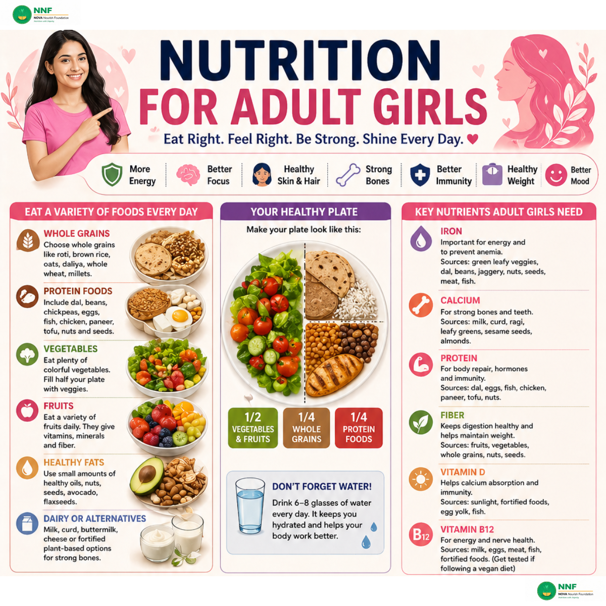

Why Nutrition is Especially Important for Girls & Women
Adult girls and women have unique nutritional needs compared to men. Factors like menstruation, hormonal changes, pregnancy, and higher risk of iron deficiency and osteoporosis make it crucial to pay attention to specific nutrients. Eating right gives you more energy, better focus, healthy skin and hair, strong bones, and a balanced mood.
Key Nutrients Adult Girls Need
Iron
The most critical nutrient for women. Iron is vital for energy production and prevents anemia — a major cause of fatigue in women. Sources: green leafy vegetables (spinach, methi), dal, beans, jaggery, nuts, seeds, meat, and fish. Pair with Vitamin C foods (lemon, amla, tomato) to boost absorption.
Calcium
Essential for strong bones and teeth. Women are at higher risk of osteoporosis as they age. Sources: milk, curd, buttermilk, paneer, ragi, sesame seeds, almonds, and leafy greens.
Protein
For body repair, hormone production, and immunity. Sources: dal, eggs, fish, chicken, paneer, tofu, nuts, and seeds.
Fiber
Keeps digestion healthy and helps maintain weight. Found in fruits, vegetables, whole grains, nuts, and seeds.
Vitamin D
Supports calcium absorption and immunity. Sources: 15–20 minutes of sunlight daily, fortified foods, egg yolk, fatty fish.
Vitamin B12
Critical for energy and nerve health. Especially important if you follow a vegan diet. Sources: milk, eggs, meat, fish, and fortified foods. Get tested if you're vegetarian or vegan.
Your Healthy Plate
Every Meal Should Include
- ½ plate: Vegetables and fruits — colourful and fresh
- ¼ plate: Whole grains — roti, brown rice, oats, daliya, millets
- ¼ plate: Protein — dal, eggs, fish, chicken, paneer, tofu
- Don't forget water: 6–8 glasses every day
Special Care for Adult Girls
Menstrual Health
Eat iron-rich foods regularly, especially around your period. Drink enough water. A good diet can significantly reduce cramps and fatigue during menstruation.
Skin & Hair Health
Eat protein, healthy fats, and vitamins A, C, E, and zinc. Drink plenty of water. Avoid excessive junk food, which worsens acne and hair fall.
Bone Health
Eat calcium and Vitamin D-rich foods every day. Stay active — weight-bearing exercise like walking, dancing, and strength training keeps bones strong. Avoid fizzy drinks and too much salt, which deplete calcium.
Weight Management
Focus on eating balanced, nutrient-dense meals — not restrictive fad diets. Regular exercise and adequate sleep also help manage healthy weight naturally.
Healthy Daily Habits
- Eat meals on time. Don't skip breakfast.
- Choose home-cooked food over processed options.
- Eat slowly and mindfully — listen to your body's signals.
- Be active for at least 30 minutes every day.
- Sleep 7–8 hours nightly for hormonal balance and recovery.
- Manage stress — it directly affects your digestion and immunity.
Sample Day
- Morning: Warm water + 4–5 soaked almonds
- Breakfast: Oats/poha with vegetables + a piece of fruit
- Lunch: Roti + dal + sabzi + salad + curd
- Evening snack: Fruit or nuts or sprouts
- Dinner: Brown rice + dal/sabzi + salad
- Bedtime: Turmeric milk or warm milk
When to See a Doctor
- If you feel very tired all the time despite sleeping enough
- If you have irregular periods
- If you have hair fall, brittle nails, or acne issues
- If you have sudden weight changes
- Always get regular health check-ups
"Love yourself. Nourish yourself. Your body, your health, your responsibility."
— NOVA Nourish Foundation